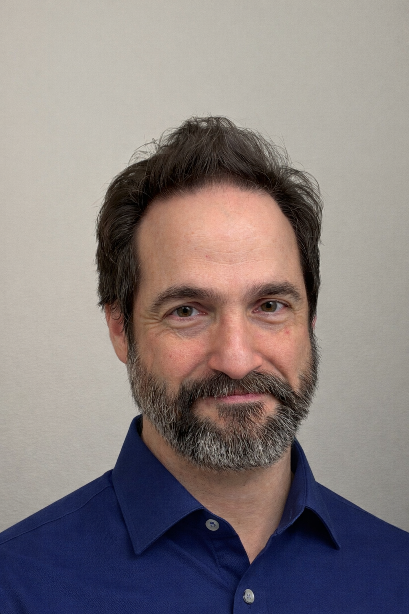
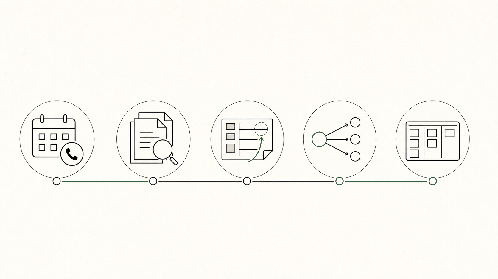

Ian Brillembourg brings 15+ years in product leadership, AI, data, games, mobile, consumer UX, and early-stage company building to founders who need clearer calls under pressure.

Ian Brillembourg, founder of Edgecaser LLC.
Ian Brillembourg
Ian has built product and BI teams from zero. He has led products used by millions of people, spent real time with games live operations and consumer UX, and still builds AI product systems himself.
His current tooling includes Shipwright, an open-source PM operating-system toolkit, and Shipwright Plus, a private cross-model conflict harness for high-stakes product decisions. Edgecaser is strongest when the decision is practical and uncomfortable: which roadmap bet to cut, which data signal to trust, how repeat-use behavior should work, and what operating cadence a young team can keep.
Experience signals
Worked across startups, platforms, and global product teams
These names are useful because they show the range of product environments Ian has operated in. They are not testimonials, endorsements, or case studies.
Microsoft
Zynga
Procter & Gamble
Wargaming
Degica
Teravision Games
Scaled product context
Microsoft, Zynga, Procter & Gamble, and Wargaming are part of Ian's background across consumer software, games, brands, and scaled product organizations.
That background is useful when a team needs to make product calls across larger audiences, faster operating cadences, and more cross-functional complexity.
Consulting and specialist work
Degica and Teravision Games reflect hands-on client work in business intelligence systems, economy design, and forecasting.
That experience maps directly to founders who need better product signals, clearer operating rhythm, and sharper decisions under uncertainty.
Operating philosophy
Structure without false certainty
Edgecaser helps founders make the product call in front of them: what to build next, how to test it, where AI or data belongs, and what decision rhythm the team can keep after the engagement.
Keep founder judgment in the room
Founder taste matters most when the evidence is messy. Edgecaser gives that mess a shape, so user signals, technical limits, and the founder's read can be weighed in the same conversation.
Turn pressure into cadence
Some questions should not wait for the next strategy off-site. Scope, validation, data, and AI choices need a weekly beat and notes a small team will actually use.
Stay inside honest boundaries
The useful promise is clearer judgment. Edgecaser helps turn product pressure into choices a team can test, revisit, and explain.
The aim is practical lift: better product decisions, cleaner team habits, and clearer next steps without adding heavy process.
Process
How an engagement starts
The first move should make the work visible. We look at the goals, artifacts, and decision pressure already on the table, then turn that into a first 2 to 4 week plan the team can argue with.

The path is plain: call, artifact review, diagnosis, scope recommendation, first plan.
Book the product fit call
Start with the product problem in its current shape. A sales demo would be the wrong first move.
Share the working artifacts
Bring the materials the team already uses: goals, roadmap notes, product questions, AI ideas, analytics, or decision records.
Diagnose the decision pressure
We name the pressure before prescribing anything. The issue may be product clarity, validation, AI judgment, operating cadence, or a knot of several at once.
Choose the right scope
The recommended shape comes after that read. It may be fractional leadership, a focused sprint, or advisory support, depending on where the pressure sits.
Start with a short plan
The first plan stays short: 2 to 4 weeks. That frame gives the engagement enough traction without pretending the first pass can guarantee the result.
Product fit call
Come with the product problem
In 30 minutes, Ian Brillembourg will help sort the right next move: fractional product leadership, an AI product sprint, or advisory support.
Bring the real context to the call. Public materials stay separate from private roadmaps, dashboards, datasets, PHI, confidential product artifacts, and client screenshots.